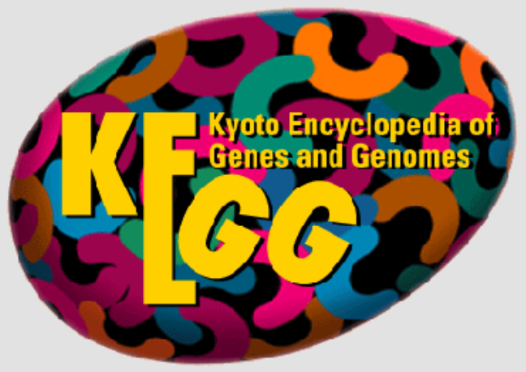
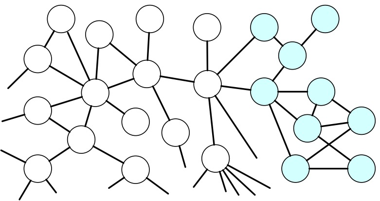
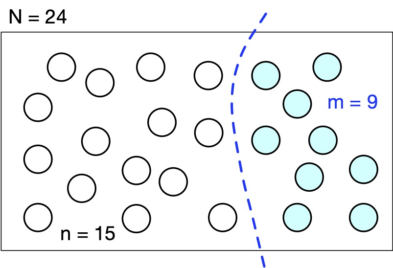
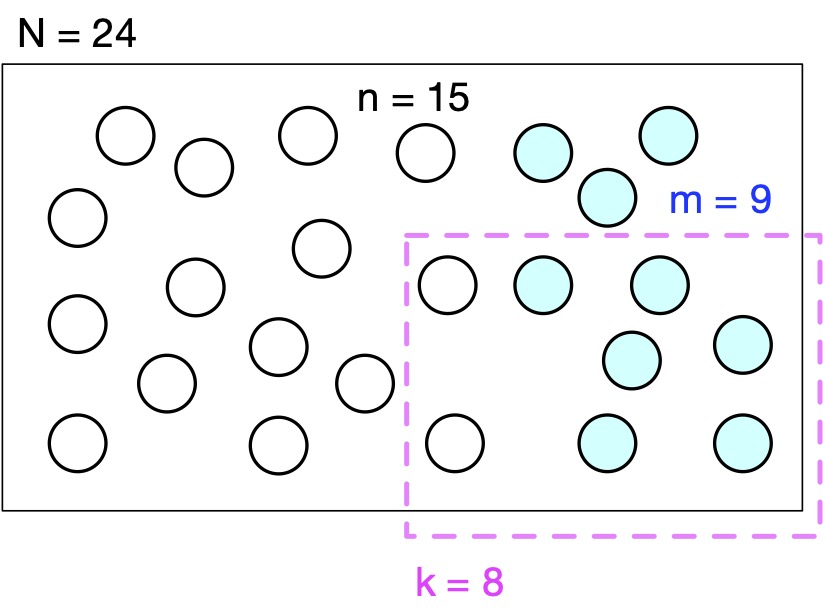
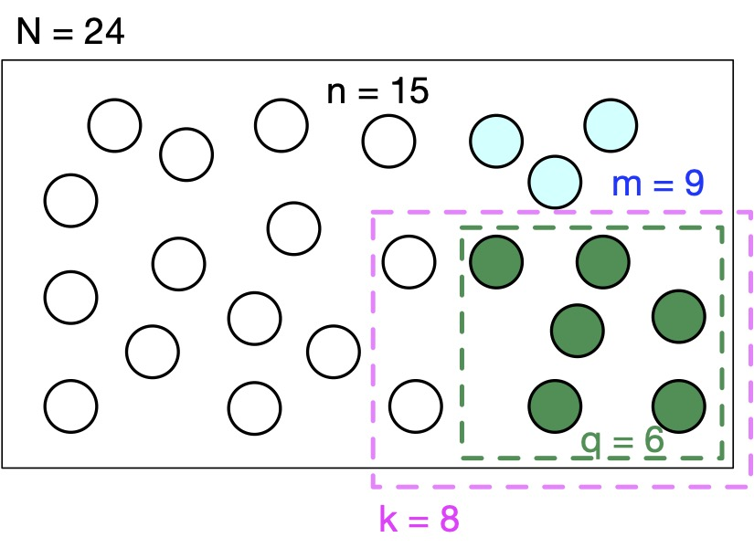
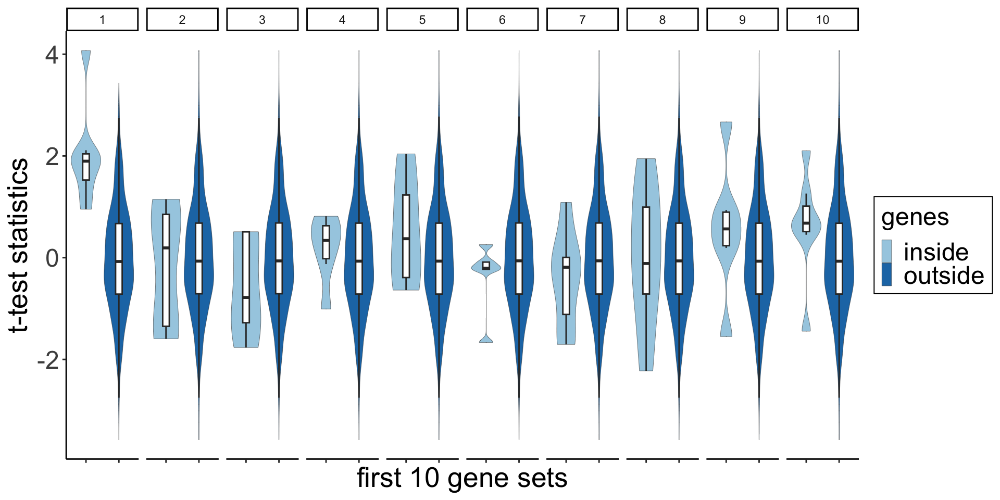

Gene set analysis
Keegan Korthauer (with slides contributions from Yongjin Park and Paul Pavlidis)
February 27, 2024
Today’s lecture
Motivations: What’s next after genomics analysis?
What have we learned?
How do we know that our discovery is meaningful?
What is Gene set analysis?
Set-based approach: hypergeometric test
Rank-based approach GSEA by KS statistic
Biological mechanisms / processes are modular
Roadmap epigenomics, Nature 2015
↓
Gene Ontology information confirms cell-type or tissue-specific biological pathways
Clusters of cells correspond to ‘cell types’
Tabula Muris , Nature 2018
What is Gene Set Analysis?
(Discrete) Gene Set Analysis
Input:
A dictionary of gene sets that map genes to sets (gene-to-set mapping)
A list of top genes identified in our own study (after FDR control)
(Rank-based) Gene Set Enrichment
Input:
A dictionary of gene sets that map genes to sets
A full list of gene-level scores (e.g., p-values)
Output: A table of scores for all the gene sets in the ‘dictionary’
Where does the ‘dictionary’ come from?
GO structure
Structure is an acyclic graph, not a tree: terms commonly have multiple parents
Annotations in the database don’t separately list out all the parents
Includes a mix of ‘directly annotated’ and many ‘inferred’ terms
Several relationship types
GO aspects
“Elemental activities, such as catalysis or binding, describing the actions of a gene product at the molecular level.”
Primarily enzymatic activities
Part of a cell/extracellular environment of which a gene product is a component
Examples: “cell wall”, “actin body”
“A phenomenon marked by changes that lead to a particular result, mediated by one or more gene products.”
Closest GO concept to “pathways”
Limitations of GO terms
Incomplete and unstable (continual updates)
Distribution of annotations per gene is non-uniform (many genes have few/none, others have hundreds)
Doesn’t give relationship between genes within a term
Pathways: Another grouping of genes

Example: Kyoto Encyclopedia of Genes and Genomes (KEGG) Pathways database
Species-specific directed networks of genes and their relationships, curated from the literature
Pathways are organized into functional categories (not nearly as complex as GO)
What have we learned from our differential expression analysis?
blue: some biological pathway of interest
Let’s drop the edges in biological networks
Prior Knowledge of biological pathways define a set of genes (blue)
Does this pathway overlap with our DEG list?
Suppose we discovered the 8 DEG outlined (pink)
Is our DEG list enriched for genes in this pathway?
Suppose we found \(q\) genes are overlapping with this pathway (green)
Gene Set Analysis testing over-representation of DEGs
What are the relevant numbers?
\(N\) : # genes in this universe
\(m\) : # genes in this set
\(n\) : # genes not in this gene set
\(k\) : # DEGs in our analysis
\(q\) : # DEGs (of \(k\) ) overlapping with the set of \(m\) genes
Is this overlap of \(q=6\) of \(k=8\) genes significant ?
In this example:
\(N = 24\) total genes
\(m = 9\) genes in this set
\(n = N - m = 15\) not in this set
\(k = 8\) DEGs
\(q=6\) out of \(k=8\) overlap
Is this overlap of \(q=6\) of \(k=8\) genes significant?
Questions:
Is it meaningful enough to report?
Is it surprising enough that we recapitulated 6/9 (~67 %) genes in the set?
Is it surprising enough that we 6/8 (~75 %) of our DEG are in the set?
What is the null distribution?
What is the generative/simulation scheme?
How do we find \(q\) out of \(k\) DEGs overlapping with a gene set of \(m\) genes?
Under the null of hypergeometric distribution
Randomly sample \(k\) DEGs out of \(N\) genes
Of these \(k\) genes, \(q\) overlap with a gene set consisting of \(m\) genes
The rest \(k-q\) genes overlap with genes outside of the gene set \(N-m\)
How to generalize?
Binomial coefficient : Let’s see if we can estimate the null distribution by counting
How many possible ways to select \(k=8\) out of \(N=24\) genes, ignoring the order of \(k\) selected genes and \(N-k\) not selected genes?
We can think of this as three steps:
enumerating \(N\) genes
partition them into the first \(k\) genes and the rest
ignore the order within each partition
\[{24 \choose 8} = \frac{{\color{teal}\textsf{\{all possible ways to enumerate }24 \textsf{ genes}\}}}
{{\color{magenta}\{ \textsf{enumerating }8 \textsf{ genes}\}} {\color{blue}\{\textsf{enumerating }16 \textsf{ genes} \}}}
= \frac{{\color{teal}24!}}{{\color{magenta}8!}{\color{blue}16!}}\]
Calculating the binomial coefficient
There are a lot of ways to select \(k=8\) DEGs out of \(N=24\) total genes!
What is the probability of selecting (at random) this exact set of \(k\) DEGs out of \(N\) genes?
Enumerating the other possibilities
How many possible ways of finding \(q\) DEGs overlapping with \(m\) genes in the gene set? \[{m \choose q}\]
How many possible ways of finding the rest \(k-q\) DEGs overlapping with (\(N-m=n\) ) genes in the gene set? \[{N-m \choose k-q}\]
Probability distribution to describe this process
Hypergeometric distribution
A discrete probability distribution that describes the probability of \(q\) successes (random draws for which the object drawn has a specified feature) in \(k\) draws, without replacement, from a finite population of size \(N\) that contains exactly \(m\) objects with that feature.
image source: en.wikipedia.org/wiki/Hypergeometric_distribution
Hypergeometric distribution
Probability mass function
\[
\begin{eqnarray*}
P(x=q|N,m,k) &=&
\sum_{\begin{array}{l}
{\color{blue}
\textsf{# ways to select }q\textsf{ out of }m } \\
{\color{teal}
\textsf{# ways to select }(k-q)\textsf{ out of }N-m }
\end{array}}
{\color{magenta}
\begin{array}{l}
\textsf{the probability} \\
\textsf{of choosing a set size }k \\
\textsf{out of total }N
\end{array}} \\
&=&
{
\underbrace{\color{blue} {m \choose q}}_{
\begin{array}{l}
{\color{blue}\textsf{# ways to choose }} \\
{\color{blue}q\, \textsf{ overlap out of }m}
\end{array} }
}
{
\times
\underbrace{\color{teal} {N-m \choose k - q}}_{
\begin{array}{l}
{\color{teal}\textsf{# ways to choose }} \\
{\color{teal}(k-q) \textsf{ out of }N-m}
\end{array} }
}
{
\times
{\color{magenta} {N \choose k}^{-1} }
}
\end{eqnarray*}
\]
What is the probability of \(k\) overlapping DEGs?
Hypergeometric PMF
\[P(x=q|N,m,k) = \frac{{m \choose q} {N - m \choose k-q}}{{N \choose k}}\]
Hypergeometric CDF
\[P(x{\le} q|N,m,k) = \sum_{i = 0}^{q} \frac{{m \choose i} {N - m \choose k-i}}{{N \choose k}}\]
Hypergeometric test for testing significant overlap
\[H_{0}:\, x \le q \quad \textsf{vs.} \quad H_{1}:\, x > q\]
We may observe overlap \(q\) genes by random sampling of \(k\) genes without replacement.
Therefore, we can calculate the p-value:
\[P(x > q|n, m, k) = 1 - \sum_{i = 0}^{q} \frac{{m \choose i} {n \choose k-i}}{{n+m \choose k}}\]
1 - phyper (q = 6 , m = 9 , n = 15 , k = 8 )
How significant is \(q\) overlap in our discovery?
\(m=9\) , \(n=15\) , & \(k=8\) :
Not all gene sets are the same (gene length bias)
So far, we assumed all genes are independent and equally likely to be DE under the null
Distribution of average gene lengths in GO categories
Wilcoxon p-values of median length of genes in 7,873 GO categories compared to overall
Summary of discrete gene set analysis
Estimating the null distribution of ranks/scores over gene sets of interest is nontrivial
A collection of gene-sets: \(\mathcal{C}_{1}, \ldots, \mathcal{C}_{K}\)
A vector of gene-level scores (\(G\) genes): \(z_{1}, \ldots, z_{G}\)
Each \(z_{g}\) could come from differential expression analysis
GSEA algorithm
For each \(k\)
Compute a set-level score \(S_{k}(\mathbf{z},\mathcal{C}_{k})\)
E.g., Kolmogorov-Smirnov statistic comparing
\[\{z_{g}:\,g \in \mathcal{C}_{k}\} \, \textsf{vs.} \, \{z_{g}:\,g \notin \mathcal{C}_{k}\}\]
Construct null distribution of \(S_{1}, \ldots, S_{K}\) by sample label (case-control) or gene-to-set membership permutation
Using null distribution by permutation, estimate p-values and false discovery rates
If we knew null distribution, we would not need expensive permutations
Bad :
Need to define an appropriate statistic?
What do we permute? Samples? Gene sets?
Permutations are computationally intensive
Generate basal gene expression (sample \(i\) , gene \(g\) )
\[X_{i,g} \sim \mathcal{N}\!\left(0,1\right)\]
Sample case vs. control membership (the rows of \(X\) ) uniformly at random
Sample gene set membership uniformly at random
For the first gene set, select a certain fraction of genes to perturb
For the selected genes \(g^{*}\) , add some \(\Delta\) value to \(X_{i,g^*}\) if the sample \(i\) belongs to the control group
Let’s simulate some gene set data (Efron & Tibshirani 2007)
<- function (G = 1000 , # genes K = 150 , # gene sets n.samp = 100 , # sample size delta = .4 , # perturbation p.perturb = 1 ) { # Pr of petrub <- sample (0 : 1 , n.samp, TRUE )<- sample (K, G, TRUE ) # gene sets <- .rnorm (n.samp, G) # All the other genes ## Perturbation of the first gene set .1 <- which (S == 1 )<- length (.genes.1 )<- max (floor (n1 * p.perturb),1 ).1 <- sample (.genes.1 , n.perturb)<- case.control == 1 .1 ] <- X[.case, .genes.1 ] + deltarequire (Matrix)<- sparseMatrix (j= 1 : G, i= S, x= rep (1 ,G))list (X= X, S= .membership, Y= case.control)
set.seed (1 )<- simulate.data ()str (dat)
List of 3
$ X: num [1:100, 1:1000] 0.399 -0.262 -0.303 -0.734 -1.382 ...
$ S:Formal class 'dgCMatrix' [package "Matrix"] with 6 slots
.. ..@ i : int [1:1000] 107 47 32 44 148 30 101 144 72 86 ...
.. ..@ p : int [1:1001] 0 1 2 3 4 5 6 7 8 9 ...
.. ..@ Dim : int [1:2] 150 1000
.. ..@ Dimnames:List of 2
.. .. ..$ : NULL
.. .. ..$ : NULL
.. ..@ x : num [1:1000] 1 1 1 1 1 1 1 1 1 1 ...
.. ..@ factors : list()
$ Y: int [1:100] 0 1 0 0 1 0 0 0 1 1 ...
We’d like a representative score for genes within each set

What will be a proper gene set score?
Can we simply aggregate gene-level z-scores (or t-statistics) within each set?
\[S_{k} = \sum_{g \in \mathcal{C}_{k}} z_{g} / \sqrt{|\mathcal{C}_{k}|} \sim \mathcal{N}\!\left(0, 1\right)\] if \(Z_{g} \sim \mathcal{N}\!\left(0,1\right),\,\forall g\)
Aggregating z-scores within a set
Function to run a t test for each gene:
<- function (X, Y){<- Y == 1 <- Y == 0 <- function (x){t.test (x[.case],$ statisticapply (X, 2 , .fun)
Function to compute Stouffer Z-score
<- function (X, S, Y) {<- run.t.test (X, Y)<- apply (S, 1 , sum)<- (S %*% z.genes / sqrt (n.sets))<- geneset.score (dat$ X, dat$ S, dat$ Y)
Constructing the null distribution by gene permutation
What if we don’t know the distribution of set-wise scores?
<- t (apply (dat$ S, 1 , sample))<- geneset.score (dat$ X, S.perm, dat$ Y)
How it goes:
Repeatedly permuting gene set membership matrix while preserving the number of genes within each set
Compute set-level z-scores (or a similar kind) and construct null distribution
Calculate p-values by counting the frequency of observed \(S_{k}^{*} > S_{k}^{\textsf{perm}}\)
Constructing the null distribution by sample permutation
<- sample (dat$ Y)<- geneset.score (dat$ X, S.perm, Y.perm)
Repeat the permutation of case-control labels while preserving the same number of cases and controls
Compute set-level z-scores (or a similar kind) and construct null distribution
Calculate p-values by counting the frequency of observed \(S_{k}^{*} > S_{k}^{\textsf{perm}}\)
Summary of rank-based gene set analysis
When does it apply?
We have ranked all our genes by a score/test statistic (or compute a summary score for every gene set of interest)
We want to know whether any of our gene sets of interest tend to have more highly ranked genes (or higher summary scores)
When does it not apply?
There is a hidden factor that can affect two steps: (1) gene set selection (annotations/knowledge) and (2) gene scoring
Estimating the null distribution of ranks/scores over gene sets of interest is nontrivial